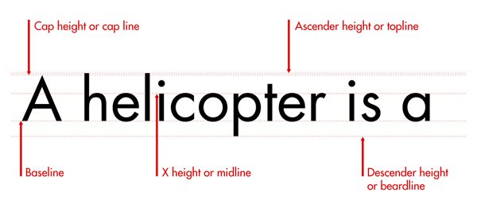

Lines
A line of characters has at least five lines that it can be aligned to. These horizontal lines are guides for capital letters, ascenders, lowercase and descenders (we’ll discuss these terms shortly).

- Baseline: The one you might be most familiar with is the baseline. This is the line that the text sits on.
- Cap height (or cap line): This marks the top of capital letters.
- Ascender height (or topline): This line shows where the top of letters such as k and h touch. Strangely, in a lot of cases, this line is slightly higher than the capital line. It took me a while to get this into my head because, intuitively, you would think that capital letters would be the tallest characters.
- X-height (or midline): This shows the height of lowercase letters (excluding ascenders and descenders). It is typically measured using the height of the letter x.
- Descender height (or beardline): Descenders are the parts of characters that go below the baseline (such as the letters p and y). This line shows where the bottoms of the decenders are.